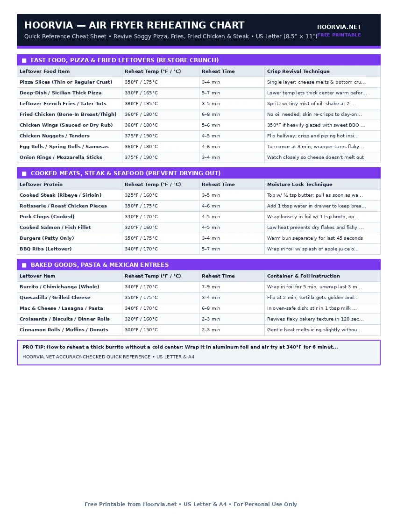

Air Fryer Leftover Reheating Time & Temperature Chart
Microwaves heat water molecules rapidly, turning leftover pizza crusts chewy and leftover French fries limp. An air fryer drives surface moisture off while gently warming the core. The golden rule of reheating is using a lower temperature (320°F–360°F) so the center warms to 165°F before the outside burns.
| Leftover Food Item | Reheat Temp (°F / °C) | Reheat Time | Crisp Revival Technique |
|---|---|---|---|
| Pizza Slices (Thin or Regular Crust) | 350°F / 175°C | 3–4 min | Single layer; cheese melts & bottom crust crisps |
| Deep-Dish / Sicilian Thick Pizza | 330°F / 165°C | 5–7 min | Lower temp lets thick center warm before cheese browns |
| Leftover French Fries / Tater Tots | 380°F / 195°C | 3–5 min | Spritz w/ tiny mist of oil; shake at 2 min |
| Fried Chicken (Bone-In Breast/Thigh) | 360°F / 180°C | 6–8 min | No oil needed; skin re-crisps to day-one crunch |
| Chicken Wings (Sauced or Dry Rub) | 360°F / 180°C | 5–6 min | 350°F if heavily glazed with sweet BBQ sauce |
| Chicken Nuggets / Tenders | 375°F / 190°C | 4–5 min | Flip halfway; crisp and piping hot inside |
| Egg Rolls / Spring Rolls / Samosas | 360°F / 180°C | 4–6 min | Turn once at 3 min; wrapper turns flaky again |
| Onion Rings / Mozzarella Sticks | 375°F / 190°C | 3–4 min | Watch closely so cheese doesn't melt out |
| Leftover Protein | Reheat Temp (°F / °C) | Reheat Time | Moisture Lock Technique |
|---|---|---|---|
| Cooked Steak (Ribeye / Sirloin) | 325°F / 160°C | 3–5 min | Top w/ ½ tsp butter; pull as soon as warm (115°F) |
| Rotisserie / Roast Chicken Pieces | 350°F / 175°C | 4–6 min | Add 1 tbsp water in drawer to keep breast juicy |
| Pork Chops (Cooked) | 340°F / 170°C | 4–5 min | Wrap loosely in foil w/ 1 tsp broth, open last 1 min |
| Cooked Salmon / Fish Fillet | 320°F / 160°C | 4–5 min | Low heat prevents dry flakes and fishy odor |
| Burgers (Patty Only) | 350°F / 175°C | 3–4 min | Warm bun separately for last 45 seconds |
| BBQ Ribs (Leftover) | 340°F / 170°C | 5–7 min | Wrap in foil w/ splash of apple juice or BBQ sauce |
| Leftover Item | Reheat Temp (°F / °C) | Reheat Time | Container & Foil Instruction |
|---|---|---|---|
| Burrito / Chimichanga (Whole) | 340°F / 170°C | 7–9 min | Wrap in foil for 5 min, unwrap last 3 min to crisp |
| Quesadilla / Grilled Cheese | 350°F / 175°C | 3–4 min | Flip at 2 min; tortilla gets golden and crunchy |
| Mac & Cheese / Lasagna / Pasta | 340°F / 170°C | 6–8 min | In oven-safe dish; stir in 1 tbsp milk & cover w/ foil |
| Croissants / Biscuits / Dinner Rolls | 320°F / 160°C | 2–3 min | Revives flaky bakery texture in 120 seconds |
| Cinnamon Rolls / Muffins / Donuts | 300°F / 150°C | 2–3 min | Gentle heat melts icing slightly without burning |
Printable Cheat Sheet Preview (US Letter & A4)
High-contrast, ink-saving layout designed for kitchen binders and refrigerator magnets. No sign-up required.

The Science of Reheating Without Overcooking Proteins
When you cook a steak or chicken breast the first time, you use 380°F–400°F to create crust and cook raw fibers. If you reheat it at 400°F, you cook the meat a second time—turning a medium-rare steak into leather.
- Drop the Heat to 320°F–350°F: Lower air temperature gives warmth time to travel to the core before the exterior scorches.
- The Foil-Then-Open Method: For thick items, cover with foil for two-thirds of the time, then uncover to crisp.
Frequently Asked Questions
Can I put glass Pyrex or ceramic bowls inside the air fryer to reheat pasta?
Yes! Any dish rated 'Oven-Safe' (like Pyrex, ceramic ramekins, stainless steel, or silicone molds) is 100% safe in an air fryer. Never use thin plastic Tupperware or paper plates.
Why did my leftover fries dry out when reheated?
Leftover fries lose moisture overnight in the fridge. Toss them with 3–4 drops of cooking oil and a pinch of salt before reheating at 380°F for 3–4 minutes.
Complete Air Fryer Reference Cluster (10 Free Sheets)
- 📄 Air Fryer Cooking Times Chart (#001)
- 📄 Air Fryer Temperature Chart & Oven Conversion (#002)
- 📄 Air Fryer Frozen Food Cooking Times (#003)
- 📄 Air Fryer Chicken Cooking Times (#004)
- 📄 Air Fryer Beef & Steak Doneness Chart (#005)
- 📄 Air Fryer Pork Chops, Belly & Ribs Chart (#006)
- 📄 Air Fryer Fish, Salmon & Shrimp Chart (#007)
- 📄 Air Fryer Fresh Vegetable Roasting Chart (#008)
- 📄 Air Fryer Food Doneness & Pull Temp Guide (#010)